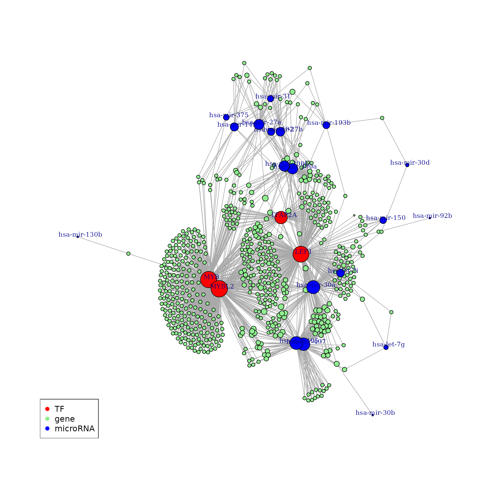
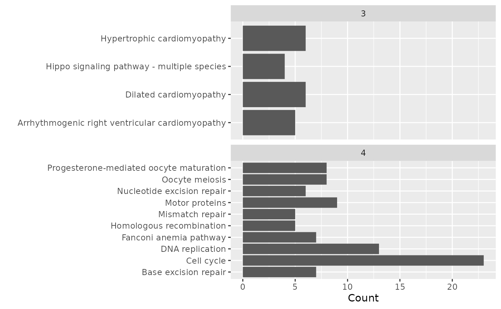

Case Study
Transcription factors and microRNAs in Gastric cancer
Mahmoud Ahmed
August 22, 2017
Source:vignettes/case_study.Rmd
case_study.RmdOverview
In this brief study, we attempted to answer questions raised by Shi and colleagues in a paper published in PLOS in 2015. The aim of this case study is to illustrate the use of cRegulome to obtain data based on queries of interest. Secondly, to integrate the package in a useful and meaningful workflow and give a context to the kind of information one can get from such databases.
Motivation
Shi et al. studied the transcription factors and microRNA co-regulation of genes involved in gastric cancer to reveal the signaling pathways that drive the development of the disease (Shi et al., 2015). Briefly, they used the previous literature and microarrays to identify the differentially expressed transcription factors (TF) and microRNAs in gastric cancer tissues compared to the normal ones. Then, they identified their target genes using annotation databases and constructed a TF-microRNA gene regulatory network. Finally, they identified the hub-genes and performed a functional analysis namely KEGG pathways enrichment to find which signalling pathways they belong to.
Here, we tried tackling the same question using cRegulome data. We started from the same point like the PLOS paper by using the lists of differentially expressed TF and microRNAs, then used cRegulome data to find driving genes and pathways in Stomach and esophageal cancer (STES).
PLOS paper data
Interesting transcription factors and microRNAs
We started by obtaining the lists of differentially expressed TFs and microRNAs which were compiled from the previous literature and microarray profiling respectively.
library(cRegulome)
library(readxl)
library(ggplot2)
library(RSQLite)
library(R.utils)
library(igraph)
library(AnnotationDbi)
library(org.Hs.eg.db)
library(clusterProfiler)
# list of transcription factors
if(!file.exists('tf.xlsx'))
download.file('https://www.ncbi.nlm.nih.gov/pmc/articles/PMC4393113/bin/pone.0122882.s001.xlsx',
destfile = 'tf.xlsx', mode = 'wb')
tf <- read_excel('tf.xlsx', skip = 1)
# list of microRNAs
if(!file.exists('mir.xls'))
download.file('https://www.ncbi.nlm.nih.gov/pmc/articles/PMC4393113/bin/pone.0122882.s003.xls',
destfile = 'mir.xls', mode = 'wb')
mir <- read_excel('mir.xls', skip = 1)Here are the numbers and the first few entries from the lists:
## [1] 5## [1] "TFAP2A" "ETV4" "LEF1" "MYB" "MYBL2"## [1] 93## [1] "hsa-miR-18b*" "hsa-miR-409-3p" "hsa-let-7g" "hsa-miR-30c"
## [5] "hsa-miR-30a"Use cRegulome to access correlation data
Here, we show the straight forward way of obtaining correlation/co-expression data using the cRegulome package. This is only two simple steps. First, download the database if you are using the package for the first time. And make a query using the TF/microRNAs of interest and limit the output to their known targets. For convenience, the data were included in a test subset of the database file and is used throughout this vignette instead of the full database file.
# download the db file when using it for the first time
destfile = paste(tempdir(), 'cRegulome.db.gz', sep = '/')
if(!file.exists(destfile)) {
get_db(test = TRUE)
}
# connect to the db file
db_file = paste(tempdir(), 'cRegulome.db', sep = '/')
conn <- dbConnect(SQLite(), db_file)
# query the database
creg_tf <- get_tf(conn,
tf = unique(tf$SOURCE),
study = 'STES',
targets_only = TRUE)
creg_mir <- get_mir(conn,
mir = tolower(unique(mir$AccID)),
study = 'STES',
targets_only = TRUE)Here is a comparison of the numbers found in the TF/microRNAs previous lists and the query output.
## [1] 34## [1] 4TCGA stomach and esophageal cancer study
Transcription factors
To answer these questions, we first construct a query in cRegulome to get the TF-gene correlations in the STES cancer study. We then look at the numbers of targets, densities and intersections using methods from cRegulome package.
# numbers of targets
table(creg_tf$tf)##
## LEF1 MYB MYBL2 TFAP2A
## 1140 859 1056 198
cor_upset(ob_tf)microRNA
Similarly, we use the output data.frame of microRNA-gene correlations in the STES study and summarize the numbers, densities and intersections using cRegulome.
# numbers of targets
table(creg_mir$mirna_base)##
## hsa-let-7g hsa-let-7i hsa-mir-126 hsa-mir-130b hsa-mir-146a hsa-mir-149
## 329 457 11 381 101 235
## hsa-mir-150 hsa-mir-192 hsa-mir-193b hsa-mir-195 hsa-mir-200a hsa-mir-200b
## 91 107 126 658 445 659
## hsa-mir-202 hsa-mir-216b hsa-mir-217 hsa-mir-221 hsa-mir-222 hsa-mir-27a
## 142 6 8 179 200 652
## hsa-mir-27b hsa-mir-30a hsa-mir-30b hsa-mir-30d hsa-mir-31 hsa-mir-33a
## 608 746 540 507 209 205
## hsa-mir-34a hsa-mir-375 hsa-mir-378 hsa-mir-424 hsa-mir-431 hsa-mir-487b
## 196 110 54 395 37 3
## hsa-mir-497 hsa-mir-92b hsa-mir-99a hsa-mir-99b
## 620 302 30 23
cor_upset(ob_mir)Network construction
For the purpose of constructing the network, we decided to limit the nodes to the TFs/microRNAs and gene targets with high correlation (absolute Pearson’s correlation > 0.3). We first return to cRegulome to query the database and tweak the output to be used with the igraph package to build the network.
# query cRegulome to get high correlated targets
creg_tf <- get_tf(conn,
tf = unique(tf$SOURCE),
study = 'STES',
min_abs_cor = .3,
targets_only = TRUE)
creg_mir <- get_mir(conn,
mir = tolower(unique(mir$AccID)),
study = 'STES',
min_abs_cor = .3,
targets_only = TRUE)First, we construct two separate networks for the TF and the microRNA correlations using the cor_igraph function. Then, we combine the two networks and their attributes.
# make two separate networks
p1 <- cor_igraph(cTF(creg_tf))
p2 <- cor_igraph(cmicroRNA(creg_mir))
# combine networks
p <- graph.union(p1, p2)
# combine attributes
V(p)$type[V(p)$name %in% unique(creg_tf$tf)] <- 'TF'
V(p)$type[V(p)$name %in% unique(creg_mir$mirna_base)] <- 'microRNA'
V(p)$type[is.na(V(p)$type)] <- 'gene'
V(p)$color <- c('lightgreen', 'blue', 'red')[factor(V(p)$type)]
V(p)$label <- ifelse(V(p)$type == 'gene', '', V(p)$name)
E(p)$weight_1[is.na(E(p)$weight_1)] <- E(p)$weight_2[!is.na(E(p)$weight_2)]Node degrees
Simple and useful information about the network can be obtained by analyzing the vertices degree. A node degree is the number of edges it shares with other nodes in the graph. Most of the nodes in the network we constructed have on edge/connection to another node. Most of the gene nodes has one edge and a few genes have 2 to 5 edges. Those are the ones that are regulated by two or more regulatory element (TF/microRNAs).
par(mfrow=c(1,2))
deg <- degree(p)
# full network degrees
plot(density(deg),
main = 'Full network degrees')
# gene degrees
plot(density(deg[V(p)$type == 'gene']),
main = 'Gene nodes degrees')Visualizing a dense network may not provide a lot of details, however we notice that the transcription factors (red) and the microRNAs (blue) are in many cases co-regulate one or more gene. So in the following section, we will used a clustering algorithm to capture these connections in sub-communities and used the KEGG enrichment analysis to ask whether they are biologically meaningful.
# plot network
set.seed(123)
par(mfrow=c(1,1))
new_p <- delete.vertices(p, deg < 2)
deg <- degree(new_p)
plot(new_p,
vertex.size = log2(deg)+1,
vertex.label.dist = .3,
vertex.label.cex = .8,
vertex.label = V(new_p)$label,
edge.arrow.size = 0)
legend('bottomleft',
legend = unique(V(new_p)$type),
col = unique(V(new_p)$color),
pch = 19)
Finding clusters
Here, we tried to find substructures in the network using the fast greedy algorithm. Three clusters were found and are shown in the dendrogram.
set.seed(123)
cfg <- cluster_fast_greedy(new_p, weights = E(new_p)$weight_1)
plot_dendrogram(cfg,
labels = V(new_p)$label,
mode = 'hclust',
cex = .5)This is the number of nodes in each cluster.
clusters <- split(names(membership(cfg)),
as.numeric(membership(cfg)))
lengths(clusters)## 1 2 3 4 5
## 210 89 130 229 2Pathway enrichment analysis
# prepare entrez ids
entrez <- lapply(clusters, function(x) {
ei <- AnnotationDbi::select(org.Hs.eg.db, x, 'ENTREZID', 'SYMBOL')$ENTREZID
na.omit(ei)
})
# run kegg enrichment
comp_path <- compareCluster(entrez, fun = 'enrichKEGG', organism = 'hsa')
comp_path@compareClusterResult %>%
ggplot(aes(x = Description, y = Count)) +
geom_col() +
facet_wrap(~Cluster, scales = 'free_y', ncol = 1) +
coord_flip() +
labs(x = '')
The KEGG pathways enrichment analysis was applied to the 5 clusters separately. Clusters 3 and 4 resulted in the enrichment of 4 and 10 KEGG pathways respectively. No significant enrichment was found by the other 3 clusters.
Remarks
In the PLOS paper, the authors used annotation databases to identify the genes co-regulated by TFs and microRNAs and to construct the network. In our analysis, we used a different approach to identify these targets. For TFs, the
targets_onlyargument in the call toget_tfis based on a ChIP-seq data-driven analysis. For microRNAs,targets_onlyis based on the TargetScan annotations. For both cases, only highly correlated genes (absolute Pearson’s correlation > 0.3) were chosen to continue the analysis with.In the published study, the authors used the high
degreesof the nodes in the networks to define the hubs/or the genes with many outgoing edges to identify the ones which are co-regulated by the TFs and microRNAs of interest. However, we used thedegreesof the nodes in the network to exclude the genes with few edges. Then, used a clustering algorithm to find highly correlated nodes, then performed the KEGG enrichment analysis on them as separated groups.To sum, we constructed a co-regulation network of TF and microRNA gene targets in stomach and esophageal cancer. We identified a number of genes that are likely to be regulated by these TFs and microRNAs. These genes were clustered in 5 groups. The KEGG pathways enrichment analysis showed a high enrichment of multiple pathways involved in DNA synthesis and repair.